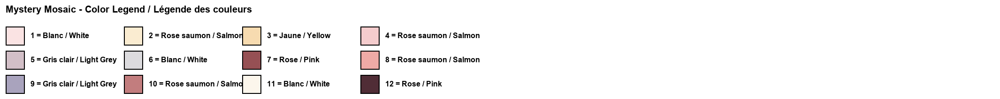
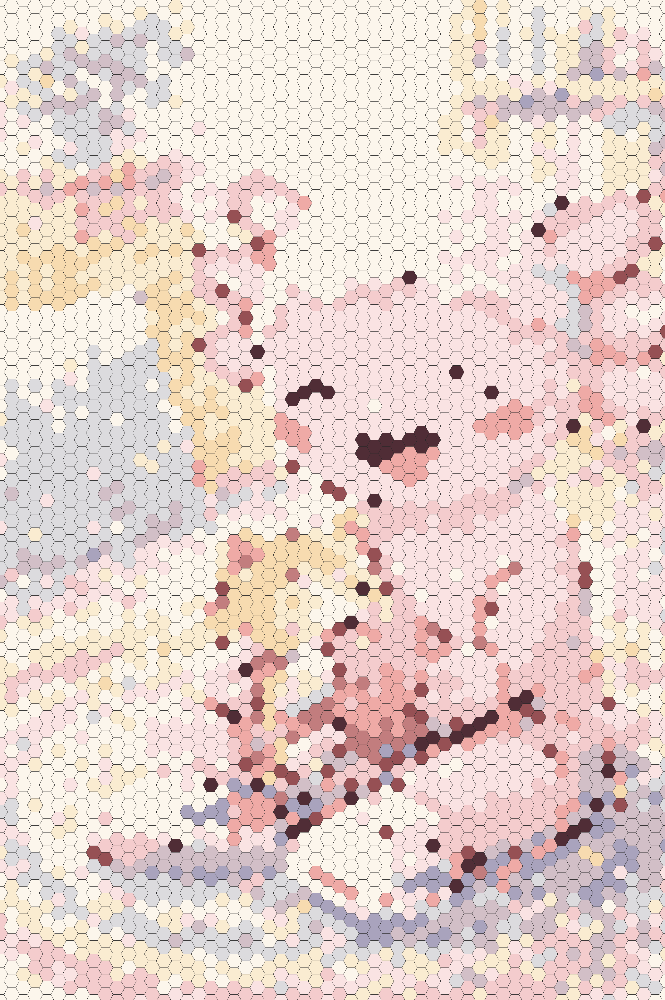

Original ImageImage originaleImagen original

Mystery Mosaic – Can you reveal the hidden image?Mosaïque mystère – Peux-tu révéler l'image cachée ?Mosaico misterioso – ¿Puedes revelar la imagen oculta?
Color LegendLégende des couleursLeyenda de colores

Answer Key (Spoiler!)Corrigé (Spoiler !)Clave de respuestas (¡Spoiler!)

Create Your Own Mystery Mosaic!Crée ta propre mosaïque mystère !¡Crea tu propio mosaico misterioso!
Upload any image and transform it into a printable mystery mosaic. Try 3 for free!Télécharge n'importe quelle image et transforme-la en mosaïque mystère imprimable. Essaie 3 gratuitement !Sube cualquier imagen y transfórmala en un mosaico misterioso imprimible. ¡Prueba 3 gratis!
🎨 Try the Mosaic Generator🎨 Essayer le Générateur🎨 Probar el GeneradorAbout This Cat Mystery Mosaic
Cat lovers will adore this free printable cat mystery mosaic! This heartwarming color by number activity shows Coco the Axolotl cuddling with an adorable kitten surrounded by colorful yarn balls in a cozy room. Each hexagonal tile on this mosaic coloring page holds a number that corresponds to a color in the legend. As kids carefully color each section, the charming cat scene slowly comes to life.
This kitten coloring page offers a unique twist on traditional coloring activities. Instead of outlines, children work with numbered hexagons to build the image piece by piece, making it a wonderful exercise in focus and patience. The printable color by number format is perfect for independent play, helping develop number recognition and fine motor skills while creating a beautiful piece of art.
Whether your child is a devoted cat fan or simply loves a good coloring challenge, this free printable is a purr-fect choice. Download, print, and start coloring! And when they're ready for more, our mosaic generator lets them turn photos of their own pets into custom mystery mosaics.
À propos de cette mosaïque mystère chat
Les amoureux des chats adoreront cette mosaïque mystère chat gratuite à imprimer ! Cette activité de coloriage par numéros montre Coco l'Axolotl en train de câliner un adorable chaton entouré de pelotes de laine colorées dans une pièce douillette. Chaque case hexagonale de cette page de coloriage mosaïque contient un numéro correspondant à une couleur de la légende. Au fur et à mesure que les enfants colorient soigneusement chaque section, la charmante scène de chat prend vie.
Cette page de coloriage chaton offre une variante unique des activités de coloriage traditionnelles. Au lieu de contours, les enfants travaillent avec des hexagones numérotés pour construire l'image pièce par pièce, ce qui en fait un excellent exercice de concentration et de patience. Le format de coloriage par numéros à imprimer est parfait pour le jeu indépendant.
Que votre enfant soit un fan de chats ou aime simplement les défis de coloriage, ce gratuit à imprimer est un choix parfait. Téléchargez, imprimez et commencez à colorier ! Notre générateur de mosaïques permet de transformer des photos de vos propres animaux en mosaïques mystères personnalisées.
Sobre este mosaico misterioso de gato
¡Los amantes de los gatos adorarán este mosaico misterioso de gato gratuito para imprimir! Esta tierna actividad de colorear por números muestra a Coco el Axolotl abrazando a un adorable gatito rodeado de ovillos de lana coloridos en una habitación acogedora. Cada casilla hexagonal en esta página de mosaico para colorear contiene un número que corresponde a un color de la leyenda. A medida que los niños colorean cuidadosamente cada sección, ¡la encantadora escena de gato cobra vida!
Esta página para colorear de gatito ofrece un giro único en las actividades de coloreo tradicionales. En lugar de contornos, los niños trabajan con hexágonos numerados para construir la imagen pieza por pieza, convirtiéndola en un maravilloso ejercicio de concentración y paciencia. El formato de colorear por números para imprimir es perfecto para el juego independiente.
Ya sea que tu hijo sea un fan de los gatos o simplemente ame un buen desafío de coloreo, este imprimible gratuito es la elección perfecta. ¡Descarga, imprime y empieza a colorear! Nuestro generador de mosaicos permite transformar fotos de tus propias mascotas en mosaicos misteriosos personalizados.
More Mystery MosaicsPlus de mosaïques mystèresMás mosaicos misteriosos